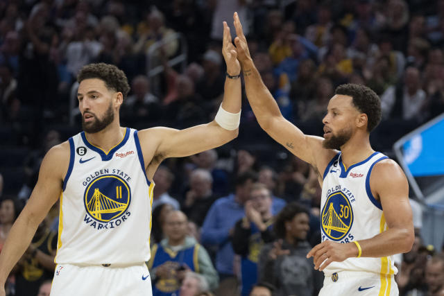
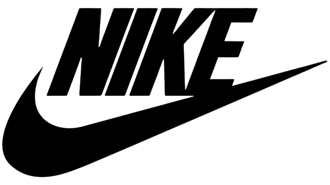

Principal
Notícias
Jogos
Quem sai do Golden State Warriors?
O Golden State Warriors oficializou a saída
do ala-armador Klay Thompson, de 34 anos.
O jogador deixou a franquia em troca tripla
na NBA e atuará pelo Dallas Mavericks.
Parceiro de Thompson desde o início da carreira, o armador
Stephen Curry lamentou a saída do “irmão”.

Uma "enxurrada" de troféus
Logo atrás de Celtics e Lakers, o Golden State Warriors
é a terceira equipe com mais conquistas da liga, com sete taças,
seguida de perto pelo Chicago Bulls de Michael Jordan,
que venceu seis vezes entre os anos de 1991 e 1998.
O último título do GSW foi em 16 de junho de 2022, vencendo
o Boston Celtics por 4-2.
VOLTAR
Patrocinadores
